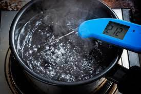

BOILED WATER

Welcome to the second easiest recipe ever!
Ingredients
Instructions
- First of all, you need to find a pot. Be careful, these are not easy to find nowadays.
- Just after finding the pot, pour some water in it, yeah. I know it is not as easy as it sounds.
- Put the pot on the stove, activate the stove aaaaaaaand voila! You got yourself a freshly boiled water!